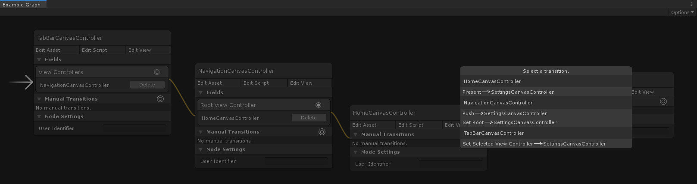

Graphs
Introduction
Graphs enable you to build the flow of your user-interface in a visual, node-based editor. Create a graph to represent a single user-interface flow. Add view controllers to the graph and make connections between them to describe the transitions and relationships of your user-interface.
The Chirp demo's user-interface is constructed using a graph.
Creation
To create a graph, select Create/UI Graph/Graph from the Unity menu. This will create a new graph asset at the selected location.
Graph Editor
Double-click a graph asset to open it in the Graph Editor window.
To pan the editor window, hold the middle-mouse button and drag or hold the ALT key and drag.
Scroll to zoom the editor window.
Adding View Controllers
To add a view controller to the graph, simply drag the view controller's asset file onto the editor window. Alternatively, right-click inside the editor window and select Add View Controller. This will create a view controller node, which represents an instance of the view controller in the graph.
Note
A graph may contain many instances, or nodes, of the same view controller.
Initial View Controller
The first view controller that is added to a graph will automatically become the graph's initial view controller. This is the view controller that will be presented first and is shown by a white arrow on the left of the node.
The graph's initial view controller is shown by a white arrow on the left of the node.
The initial view controller can be changed by right-clicking on any view controller node and selecting Make Initial from the menu.
Graphable View Objects
Objects in a view controller's view can be made to be graphable. When a view object is graphable it is exposed in the graph editor, allowing connections to be made from it. For more information on graphable view objects, see the workflow-specific section below.
UI Canvas Workflow
In order to make a view object graphable, the relevant graphable component must be added to it. For example, a standard Unity UI Button can be made graphable by adding a GraphableButtonComponent to it. This will expose a single On Click port in the editor.
This view controller's view contains two buttons � 'Home Button' and 'Profile Button' � each with a GraphableButtonComponent, which exposes them in the graph editor.
By default, UI Graph provides graphable components for the following types.
| Graphable Transition Components | --- |
|---|---|
| UnityEngine.UI.Button | GraphableButtonComponent |
| UnityEngine.UI.Toggle | GraphableToggleComponent |
| Graphable Embed Components |
|---|
| UnityEngine.RectTransform |
To save time, UI Graph can add the relevant graphable components to all known types in a view for you. To do so, right-click on the view controller node and select Make All View Elements Graphable. This will search its view for all known Graphable Transition Components listed above and add the relevant graphable component.
Note
Only Graphable Transition Components will be added via the above method.
Custom graphable components can be created for any additional components not listed above in order to expose them in the graph editor. For example, the Chirp demo uses a custom graphable component to expose its List View to the graph editor, offering a single On Item Selected port. See Custom Graphable View Components for more detail.
Embeds
As listed above, UI Graph offers a third default graphable component, the GraphableEmbedComponent. This component can be added to any game object with a RectTransform in your view controller's view to expose it to the editor. The GraphableEmbedComponent is used to embed a view controller as a child of the owning view controller, placing the child's view inside the component's RectTransform. This allows you to embed child view controllers within a view controller without scripting a custom Container View Controller.
For example, the Assassin demo embeds a stack controller in the main menu screen using a GraphableEmbedComponent.
The main menu embeds a stack view controller using a GraphableEmbedComponent. A GraphableEmbedComponent was placed on the "User Profile Stack Container" game object in the main menu's view to expose it to the graph editor.
Graphable Fields
Container View Controllers may expose graphable fields, allowing them to be configured in the graph editor. Upon instantiation from the graph, a view controller's graphable fields will be initialized with the relevant view controllers configured in the graph editor.
The standard container view controllers all expose fields to the graph editor. For example, a navigation controller exposes its root view controller to the editor, allowing it to be configured from the graph.
A navigation controller exposes its root view controller field in the graph editor.
Connecting View Controllers
Nodes can be connected to one another using the aforementioned View Objects and Fields, as well as via Manual Transitions. This is how the flow and structure of your user-interface is modelled, determining the transitions and relationships between your view controllers.
To connect an exposed port to a view controller, click and drag from the port's connector to the desired view controller node.
Connect a port by clicking and dragging from the port's connector to the desired view controller node.
When connecting Transition View Objects, such as UI Buttons, a list of available view controller transitions will be offered upon connection. This list is automatically constructed and filtered by UI Graph to include only relevant and legal transitions.
When connecting two unconnected nodes, the source view controller as well as its parent hierarchy will be queried for transitions. This is synonymous with the runtime functionality of InvokeTransition, which allows child view controllers to invoke transitions in their parent view controllers. For example, in the graph below a tab bar has a child navigation controller, which in turn has a child view controller, HomeCanvasController.
Upon connecting HomeCanvasController to the unconnected SettingsCanvasController, UI Graph will offer transitions from the source nodes' full parent hierarchy, like so:

This allows the HomeCanvasController to perform a Present (View Controller), Push (Navigation Controller), or SetSelected (Tab Bar Controller) transition to the settings view controller.
Once a view object port is connected, the selected transition will be displayed along with its current settings, as shown below.
The HomeCanvasController will invoke a Push transition in its parent navigation controller to push the SettingsCanvasController on-screen when its Settings Button is pressed.
Connecting in the reverse direction, from Settings to Home, will offer the appropriate dismissal transition, in this case a PopTo transition.
The SettingsCanvasController will invoke a 'PopTo' transition in its parent navigation controller when the manual 'PopToHome' transition is invoked.
Note
The navigation controller provides a back button by default, which will pop to the previous view controller when pressed. This means you only need to create PopTo transitions where the back button won't suffice.
Presenting A Graph
To present a graph, open the Options menu in the top-right of the graph editor window and select Add Graph To Current Scene. This will create a UI window in your current scene, as well as a graph presenter component, which will perform the necessary steps of instantiating the graph's initial view controller and making it the window's root view controller. Hit play and your graph will be presented in the window.
Manual Transitions
Manual transitions allow you to create a transition between two view controllers without the presence of a view object. This is useful if you want to invoke a transition from a non-view source, such as a network event or key press.
Note
You could also create a custom graphable component to expose a view object port for either of these scenarios instead of using a manual transition, if you wish.
To invoke a manual transition, first give it an identifier by entering a value in the transition's User Identifier field. Then from your canvas controller, invoke the transition with PerformGraphTransitionWithIdentifier when appropriate. For example, below we perform the 'Dismiss Login' transition upon a successful login.
public class HomeCanvasController : CanvasController
{
public void OnLoginCompletedSuccessfully()
{
PerformGraphTransitionWithIdentifier("Dismiss Login", this);
}
}
Note
Any transition can be given a user identifier, meaning view object transitions can also be invoked from code in this way too.